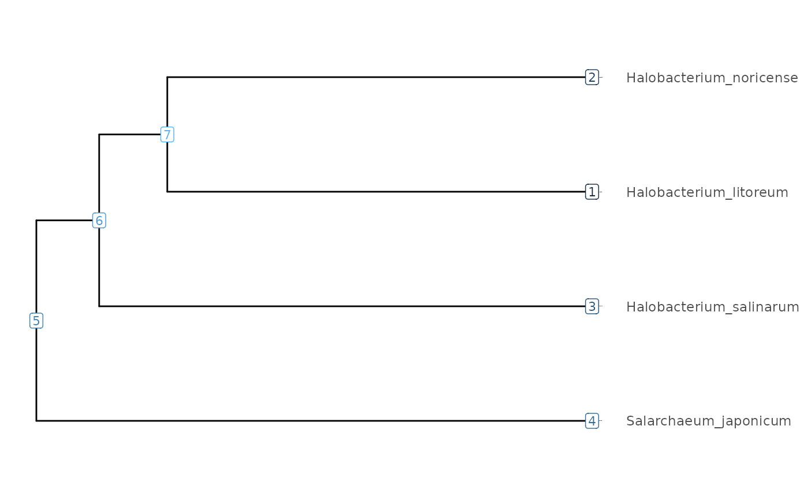
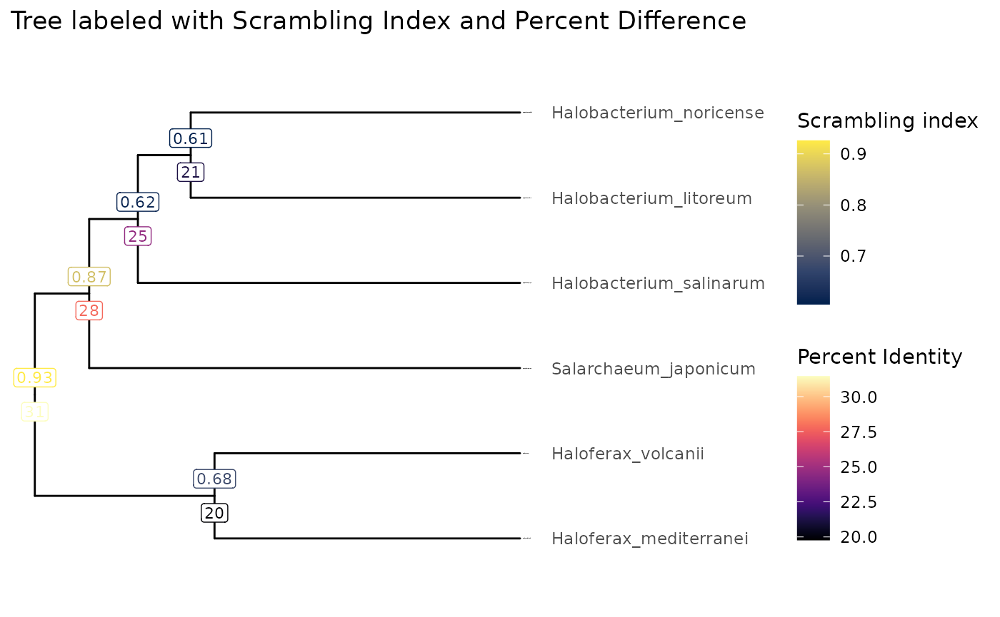

knitr::opts_chunk$set(cache = FALSE)
knitr::opts_knit$set(verbose = TRUE)Introduction
The ScrambledTreeBuilder package consists of numerous data formatting functions for phylogenetic tree building in the context of the (still internal) Scrambling in the Tree of Life project.
Load Package
The ScrambledTreeBuilder package outputs plots in ggplot2 format but you need to load the ggplot2 package to further customize them.
Example Data
This package utilizes example YAML files containing summary statistics of halobacteria genome comparison data. In regards to genome scrambling, many studies have showcased significant genome rearrangements in such halobacteria species due to dozens of insertion sequence families.
The YAML summary files are produced by performing an all vs. all
genome comparison between six halobacteria species using the nf-core pairwise genome
alignment pipeline and an post-processing
pipeline running functions from the GenomicBreaks package
to extract statistics on alignment length and the extent of genome
scrambling. Examples YAML files are stored in extdata/yaml.
Each file represent one pairwise alignment, and the file names conveys
the identifiers of the target and query genomes (here
species names) separed with three underscores (___).
Here we prepare an object called ‘yamlFileData’ that contains the path to the files.
yamlFileData <- system.file("extdata/yaml", package = "ScrambledTreeBuilder") |>
resultFiles()
yamlFileData[1]
#> Halobacterium_litoreum___Halobacterium_noricense
#> "/home/runner/work/_temp/Library/ScrambledTreeBuilder/extdata/yaml/Halobacterium_litoreum___Halobacterium_noricense.yaml.bz2"Next, we use the formatStats() function to load the YAML
files into a single dataframe where each line is a pair of species and
each column is a statistic or a metadata about that species
comparison.
exDataFrame <- formatStats(yamlFileData)
ncol(exDataFrame)
#> [1] 234
colnames(exDataFrame) |> head()
#> [1] "aligned_length_Min" "aligned_length_Q1" "aligned_length_Median"
#> [4] "aligned_length_Mean" "aligned_length_Q3" "aligned_length_Max"
colnames(exDataFrame) |> grep(pat = "_Mean", value = TRUE) |> head()
#> [1] "aligned_length_Mean" "aligned_score_Mean"
#> [3] "aligned_matches_Mean" "aligned_mismatches_Mean"
#> [5] "aligned_gaps_target_Mean" "aligned_gaps_query_Mean"
colnames(exDataFrame) |> tail()
#> [1] "percent_identity_global" "percent_difference_local"
#> [3] "percent_difference_global" "index_avg_strandDiscord"
#> [5] "percent_aligned" "lab"This data frame has a large number of columns, providing summary statistics on various aspects of the alignments. For statistics of interest, we build square matrices where rows and columns indicate one species, and the cells at each intersection contain the value for that pair.
We perform this task with the makeMatrix() function. It
provide defaults for missing values and self-comparisons. In this
vignette, let’s focus on the percent nucleotide difference and the
scrambling index.
# Percent nucleotide difference We will use it to cluster a tree.
treeMatrix <- 100 - makeMatrix(exDataFrame, "percent_identity_global", 100, 50)
round(treeMatrix)
#> Halobacterium_litoreum Halobacterium_noricense
#> Halobacterium_litoreum 0 21
#> Halobacterium_noricense 21 0
#> Halobacterium_salinarum 24 25
#> Haloferax_mediterranei 32 34
#> Haloferax_volcanii 30 30
#> Salarchaeum_japonicum 27 28
#> Halobacterium_salinarum Haloferax_mediterranei
#> Halobacterium_litoreum 24 31
#> Halobacterium_noricense 25 32
#> Halobacterium_salinarum 0 33
#> Haloferax_mediterranei 33 0
#> Haloferax_volcanii 32 20
#> Salarchaeum_japonicum 28 31
#> Haloferax_volcanii Salarchaeum_japonicum
#> Halobacterium_litoreum 30 27
#> Halobacterium_noricense 30 28
#> Halobacterium_salinarum 32 28
#> Haloferax_mediterranei 20 32
#> Haloferax_volcanii 0 30
#> Salarchaeum_japonicum 30 0
#> attr(,"builtWith")
#> [1] "percent_identity_global"
# Scrambling index
valueMatrix <- 1 - makeMatrix(exDataFrame, "index_avg_strandRand", 1, 0.5)
round(valueMatrix, 2)
#> Halobacterium_litoreum Halobacterium_noricense
#> Halobacterium_litoreum 0.00 0.61
#> Halobacterium_noricense 0.61 0.00
#> Halobacterium_salinarum 0.47 0.77
#> Haloferax_mediterranei 0.92 0.93
#> Haloferax_volcanii 0.94 0.95
#> Salarchaeum_japonicum 0.82 0.87
#> Halobacterium_salinarum Haloferax_mediterranei
#> Halobacterium_litoreum 0.47 0.92
#> Halobacterium_noricense 0.77 0.93
#> Halobacterium_salinarum 0.00 0.93
#> Haloferax_mediterranei 0.93 0.00
#> Haloferax_volcanii 0.87 0.68
#> Salarchaeum_japonicum 0.92 0.89
#> Haloferax_volcanii Salarchaeum_japonicum
#> Halobacterium_litoreum 0.94 0.81
#> Halobacterium_noricense 0.95 0.87
#> Halobacterium_salinarum 0.88 0.92
#> Haloferax_mediterranei 0.68 0.89
#> Haloferax_volcanii 0.00 0.99
#> Salarchaeum_japonicum 0.99 0.00
#> attr(,"builtWith")
#> [1] "index_avg_strandRand"We cluster the percent nucleotide difference matrix
(treeMatrix) to produce a tree in tibble format,
using the makeTidyTree() function.
# Let's average the target-query and query-target replicate pairs.
(Tibble <- makeTidyTree((treeMatrix/2 + t(treeMatrix)/2)))
#> Warning: `aes_()` was deprecated in ggplot2 3.0.0.
#> ℹ Please use tidy evaluation idioms with `aes()`
#> ℹ The deprecated feature was likely used in the ggtree package.
#> Please report the issue at <https://github.com/YuLab-SMU/ggtree/issues>.
#> This warning is displayed once every 8 hours.
#> Call `lifecycle::last_lifecycle_warnings()` to see where this warning was
#> generated.
#> Warning in fortify(data, ...): Arguments in `...` must be used.
#> ✖ Problematic arguments:
#> • as.Date = as.Date
#> • yscale_mapping = yscale_mapping
#> • hang = hang
#> ℹ Did you misspell an argument name?
#> Warning: `aes_string()` was deprecated in ggplot2 3.0.0.
#> ℹ Please use tidy evaluation idioms with `aes()`.
#> ℹ See also `vignette("ggplot2-in-packages")` for more information.
#> ℹ The deprecated feature was likely used in the ggtree package.
#> Please report the issue at <https://github.com/YuLab-SMU/ggtree/issues>.
#> This warning is displayed once every 8 hours.
#> Call `lifecycle::last_lifecycle_warnings()` to see where this warning was
#> generated.
#> # A tbl_tree abstraction: 11 × 6
#> # which can be converted to treedata or phylo
#> # via as.treedata or as.phylo
#> parent node branch.length label isTip y
#> <int> <int> <dbl> <chr> <lgl> <dbl>
#> 1 11 1 10.6 Halobacterium_litoreum TRUE 5
#> 2 11 2 10.6 Halobacterium_noricense TRUE 6
#> 3 10 3 12.3 Halobacterium_salinarum TRUE 4
#> 4 8 4 9.85 Haloferax_mediterranei TRUE 1
#> 5 8 5 9.85 Haloferax_volcanii TRUE 2
#> 6 9 6 13.9 Salarchaeum_japonicum TRUE 3
#> 7 7 7 NA NA FALSE 2.69
#> 8 7 8 5.79 NA FALSE 1.5
#> 9 7 9 1.75 NA FALSE 3.88
#> 10 9 10 1.57 NA FALSE 4.75
#> 11 10 11 1.70 NA FALSE 5.5
visualizeTree(Tibble)
#> Warning in fortify(data, ...): Arguments in `...` must be used.
#> ✖ Problematic arguments:
#> • as.Date = as.Date
#> • yscale_mapping = yscale_mapping
#> • hang = hang
#> ℹ Did you misspell an argument name?
The node IDs can be used to manipulate the tree, for instance
subsetting with the subtree() function.
visualizeTree(Tibble |> subTree(9))
#> Warning in fortify(data, ...): Arguments in `...` must be used.
#> ✖ Problematic arguments:
#> • as.Date = as.Date
#> • yscale_mapping = yscale_mapping
#> • hang = hang
#> ℹ Did you misspell an argument name?
Clades of interest can be tracked and highlighted by
FocalClade objects. For robustness against changes in the
input data or clustering approach, it is recommented to define a clade
by the most recent common ancestor from a pair of species. The
subTree() function can take FocalClade objects
instead of node IDs as input.
(Halobacterium <- focalClade(Tibble, "Halobacterium_noricense", "Halobacterium_salinarum", "blue", "Halobacterium genus"))
#> Halobacterium genus, node ID: 10, number of genomes: 3
Halobacterium@genomeIDs
#> [1] "Halobacterium_litoreum" "Halobacterium_noricense"
#> [3] "Halobacterium_salinarum"
Halobacterium@nodeID
#> [1] 10
subTree(Tibble, Halobacterium)
#> # A tbl_tree abstraction: 5 × 6
#> # which can be converted to treedata or phylo
#> # via as.treedata or as.phylo
#> parent node branch.length label group node.orig
#> <int> <int> <dbl> <chr> <fct> <int>
#> 1 5 1 10.6 Halobacterium_litoreum 1 1
#> 2 5 2 10.6 Halobacterium_noricense 1 2
#> 3 4 3 12.3 Halobacterium_salinarum 1 3
#> 4 4 4 3.32 NA 1 10
#> 5 4 5 1.70 NA 1 11The focal clade objects can be added to plots to highlight the clades in the selected colors.
Haloferax <- focalClade(Tibble, "Haloferax_mediterranei", "Haloferax_volcanii", "green3", "Haloferax genus")
(clades <- FocalCladeList(Halobacterium, Haloferax))
#> Halobacterium genus, node ID: 10, number of genomes: 3
#> Haloferax genus, node ID: 8, number of genomes: 2
visualizeTree(Tibble) + clades + ggtitle("Focal clade highlight")
#> Warning in fortify(data, ...): Arguments in `...` must be used.
#> ✖ Problematic arguments:
#> • as.Date = as.Date
#> • yscale_mapping = yscale_mapping
#> • hang = hang
#> ℹ Did you misspell an argument name?
To plot more data on the tree, we add other statistics to the tree
object, here the scrambling index and the percent nucleotide difference,
using the makeValueTibble() function. This operation
reduces a pairwise matrix to the tree, by averaging all the pairs
sharing the same most recent common ancestor, represented by an internal
node in the tree.
(tibbleWithValues <- makeValueTibble(Tibble, valueMatrix, colname = "Scrambling_index"))
#> # A tbl_tree abstraction: 11 × 7
#> # which can be converted to treedata or phylo
#> # via as.treedata or as.phylo
#> parent node branch.length label isTip y Scrambling_index
#> <int> <int> <dbl> <chr> <lgl> <dbl> <dbl>
#> 1 11 1 10.6 Halobacterium_litore… TRUE 5 NA
#> 2 11 2 10.6 Halobacterium_norice… TRUE 6 NA
#> 3 10 3 12.3 Halobacterium_salina… TRUE 4 NA
#> 4 8 4 9.85 Haloferax_mediterran… TRUE 1 NA
#> 5 8 5 9.85 Haloferax_volcanii TRUE 2 NA
#> 6 9 6 13.9 Salarchaeum_japonicum TRUE 3 NA
#> 7 7 7 NA NA FALSE 2.69 0.926
#> 8 7 8 5.79 NA FALSE 1.5 0.683
#> 9 7 9 1.75 NA FALSE 3.88 0.869
#> 10 9 10 1.57 NA FALSE 4.75 0.618
#> 11 10 11 1.70 NA FALSE 5.5 0.605
(tibbleWithMultipleValues <- makeValueTibble(tibbleWithValues, treeMatrix, colname = "Percent_difference"))
#> # A tbl_tree abstraction: 11 × 8
#> # which can be converted to treedata or phylo
#> # via as.treedata or as.phylo
#> parent node branch.length label isTip y Scrambling_index
#> <int> <int> <dbl> <chr> <lgl> <dbl> <dbl>
#> 1 11 1 10.6 Halobacterium_litore… TRUE 5 NA
#> 2 11 2 10.6 Halobacterium_norice… TRUE 6 NA
#> 3 10 3 12.3 Halobacterium_salina… TRUE 4 NA
#> 4 8 4 9.85 Haloferax_mediterran… TRUE 1 NA
#> 5 8 5 9.85 Haloferax_volcanii TRUE 2 NA
#> 6 9 6 13.9 Salarchaeum_japonicum TRUE 3 NA
#> 7 7 7 NA NA FALSE 2.69 0.926
#> 8 7 8 5.79 NA FALSE 1.5 0.683
#> 9 7 9 1.75 NA FALSE 3.88 0.869
#> 10 9 10 1.57 NA FALSE 4.75 0.618
#> 11 10 11 1.70 NA FALSE 5.5 0.605
#> # ℹ 1 more variable: Percent_difference <dbl>We made multiple tables to show the step-by-step process, but typically one would just keep the last table. This can be done with pipes.
makeTidyTree((treeMatrix/2 + t(treeMatrix)/2)) |>
makeValueTibble(valueMatrix, colname = "Scrambling_index") |>
makeValueTibble(treeMatrix, colname = "Percent_difference")
#> Warning in fortify(data, ...): Arguments in `...` must be used.
#> ✖ Problematic arguments:
#> • as.Date = as.Date
#> • yscale_mapping = yscale_mapping
#> • hang = hang
#> ℹ Did you misspell an argument name?
#> # A tbl_tree abstraction: 11 × 8
#> # which can be converted to treedata or phylo
#> # via as.treedata or as.phylo
#> parent node branch.length label isTip y Scrambling_index
#> <int> <int> <dbl> <chr> <lgl> <dbl> <dbl>
#> 1 11 1 10.6 Halobacterium_litore… TRUE 5 NA
#> 2 11 2 10.6 Halobacterium_norice… TRUE 6 NA
#> 3 10 3 12.3 Halobacterium_salina… TRUE 4 NA
#> 4 8 4 9.85 Haloferax_mediterran… TRUE 1 NA
#> 5 8 5 9.85 Haloferax_volcanii TRUE 2 NA
#> 6 9 6 13.9 Salarchaeum_japonicum TRUE 3 NA
#> 7 7 7 NA NA FALSE 2.69 0.926
#> 8 7 8 5.79 NA FALSE 1.5 0.683
#> 9 7 9 1.75 NA FALSE 3.88 0.869
#> 10 9 10 1.57 NA FALSE 4.75 0.618
#> 11 10 11 1.70 NA FALSE 5.5 0.605
#> # ℹ 1 more variable: Percent_difference <dbl>
# Same resultPlot trees with values
Let’s use the tibbleWithMultipleValues object to plot
trees. In our case, we have generated a tree built based on nucleotide
percent difference values as a distance, and computed average scrambling
index for all the nodes. We can plot these values as labels on the
tree.
visualizeTree(tibbleWithMultipleValues, "Scrambling_index") +
ggplot2::ggtitle(paste("Tree built with Percent difference and labelled with Scrambling Index")) + clades
#> Warning in fortify(data, ...): Arguments in `...` must be used.
#> ✖ Problematic arguments:
#> • as.Date = as.Date
#> • yscale_mapping = yscale_mapping
#> • hang = hang
#> ℹ Did you misspell an argument name?
visualizeTree(tibbleWithMultipleValues, tibbleWithMultipleValues$Scrambling_index, ynudge = 0.2) +
ggplot2::ggtitle("Tree labeled with Scrambling Index and Percent Difference") +
ggplot2::scale_color_viridis_c(name = "Scrambling index", option = "cividis") +
ggnewscale::new_scale_colour() +
ggtree::geom_label(ggtree::aes(label=round(Percent_difference), color = Percent_difference), label.size = 0.25, size = 3, na.rm = TRUE, label.padding = ggtree::unit(0.15, "lines"), nudge_y = -0.2) +
viridis::scale_color_viridis(option = "magma", name = "Percent Identity")
#> Warning in fortify(data, ...): Arguments in `...` must be used.
#> ✖ Problematic arguments:
#> • as.Date = as.Date
#> • yscale_mapping = yscale_mapping
#> • hang = hang
#> ℹ Did you misspell an argument name?
#> Warning: The `label.size` argument of `geom_label()` is deprecated as of ggplot2 3.5.0.
#> ℹ Please use the `linewidth` argument instead.
#> This warning is displayed once every 8 hours.
#> Call `lifecycle::last_lifecycle_warnings()` to see where this warning was
#> generated.
Of course, if you spotted an interesting sub-tree, you can plot the node IDs to easily extract it for further analysis.
visualizeTree(tibbleWithMultipleValues)
#> Warning in fortify(data, ...): Arguments in `...` must be used.
#> ✖ Problematic arguments:
#> • as.Date = as.Date
#> • yscale_mapping = yscale_mapping
#> • hang = hang
#> ℹ Did you misspell an argument name?
The subTree function can conveniently be used with R’s
pipe operator to cut a sub-tree at a chosen node.
visualizeTree(tibbleWithMultipleValues |> subTree(node = 9), "Percent_difference")
#> Warning in fortify(data, ...): Arguments in `...` must be used.
#> ✖ Problematic arguments:
#> • as.Date = as.Date
#> • yscale_mapping = yscale_mapping
#> • hang = hang
#> ℹ Did you misspell an argument name?
subMatrix(Tibble, valueMatrix, 9, simpl=TRUE)
#> H_litoreum H_noricense H_salinarum S_japonicum
#> H_litoreum 0.0000000 0.6054199 0.4662469 0.8119173
#> H_noricense 0.6073435 0.0000000 0.7667464 0.8669942
#> H_salinarum 0.4677172 0.7676303 0.0000000 0.9210253
#> S_japonicum 0.8192124 0.8669109 0.9218979 0.0000000Plot node and leaf values
We can also plot leaf and node values in a standard scatterplot.
plot(100 - exDataFrame$percent_identity_global, 1 - exDataFrame$index_avg_strandRand, col = 'grey', xlab = "Percent difference", ylab="Strand randomisation index", main = "Leaf values are in grey and node values in red")
points(tibbleWithMultipleValues$Percent_difference, tibbleWithMultipleValues$Scrambling_index, col = 'red')
plotTwoBranches <- function(tree, node, X, Y, ...) {
children <- tidytree::child (tree, node)
if(nrow(children) != 2) return(invisible())
parent <- tidytree::parent(tree, children$node[1])
lines(
c(parent[, X, drop=T], children[, X, drop=T][1]),
c(parent[, Y, drop=T], children[, Y, drop=T][1]),
...
)
lines(
c(parent[, X, drop=T], children[, X, drop=T][2]),
c(parent[, Y, drop=T], children[, Y, drop=T][2]),
...
)
}
plotAllBranches <- function(tree, X, Y, ... ) {
unique(tree$parent) |> sort() |> sapply(\(node) {
plotTwoBranches(tree, node, X, Y, ...)
})
return(invisible())
}
plotAllBranches(tibbleWithMultipleValues, "Percent_difference", "Scrambling_index", col = "red")